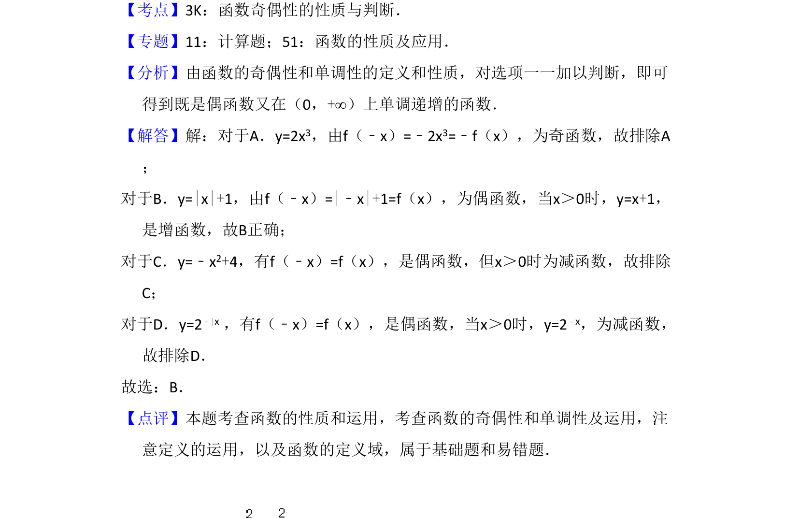

考点：函数奇偶性 函数单调性
本题通过具体函数选项考查偶函数定义及在指定区间上的单调性判断。

📄 原 PDF 第 2 页：
素材/真题/吉林/2008-2024·（吉林）数学高考真题/2011年高考数学试卷（文）（新课标）（解析卷）.pdf
3．（5分）下列函数中，既是偶函数又在（0，+∞）上单调递增的函数是（ ） A．y=2x3 B．y=|x|+1 C．y=﹣x 2+4 D．y=2 ﹣|x|
【考点】3K：函数奇偶性的性质与判断．菁优网版权所有 【专题】11：计算题；51：函数的性质及应用． 【分析】由函数的奇偶性和单调性的定义和性质，对选项一一加以判断，即可 得到既是偶函数又在（0，+∞）上单调递增的函数． 【解答】解：对于A．y=2x3，由f（﹣x）=﹣2x3=﹣f（x），为奇函数，故排除A ； 对于B．y=|x|+1，由f（﹣x）=|﹣x|+1=f（x），为偶函数，当x＞0时，y=x+1， 是增函数，故B正确； 对于C．y=﹣x2+4，有f（﹣x）=f（x），是偶函数，但x＞0时为减函数，故排除 C； 对于D．y=2﹣|x|，有f（﹣x）=f（x），是偶函数，当x＞0时，y=2﹣x，为减函数， 故排除D． 故选：B． 【点评】本题考查函数的性质和运用，考查函数的奇偶性和单调性及运用，注 意定义的运用，以及函数的定义域，属于基础题和易错题．